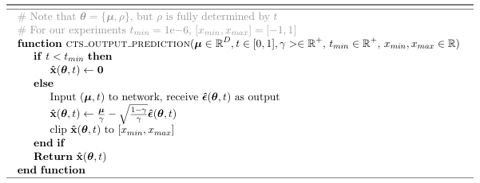
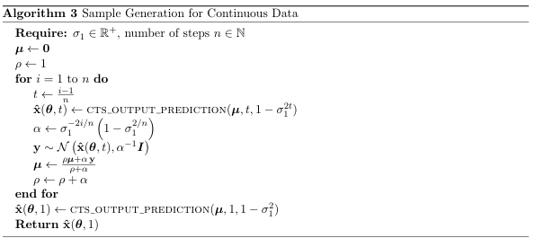
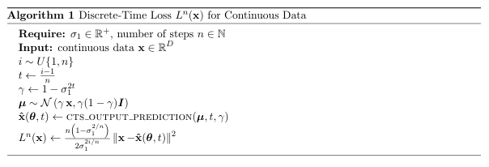
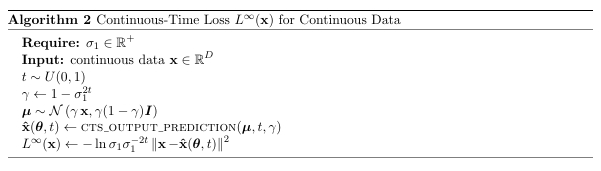

贝叶斯中间态作为加噪：Bayesian Flow Networks
Bayesian Flow Networks是由Alex Graves提出的，使用贝叶斯技巧关于生成的模型算法。
2023年，我就看到了这篇论文，但由于篇幅过长、数学推导较多难以理解、无闲暇时间，最终拖到两年后的今天，才决定动手写写自己的理解。
此文写法并不算太好，据闻youtube上也有说此文晦涩的评论。文中Alice&Bob发生和接收的意图从“趣味”入手的案例反而加难了初学者对论文的理解。
本文将抛开”发生和接收“，更言简意赅地介绍该算法。
作者将数据分为连续数据、离散数据，在连续数据上又进一步分为离散化数据，即是连续但我们把它离散化，比如位图，也有点类似分箱。
为了简便，我们目前只讨论连续数据。（也许后续会更新更多。）
作者背景
艾力克斯·格雷夫斯（英语：Alex Graves）是一名计算机科学家。在DeepMind担任研究科学家之前，他在爱丁堡大学获得理论物理学学士学位，并在IDSIA的于尔根·施密德胡伯指导下获得了人工智能博士学位。他还曾在慕尼黑工业大学的施密德胡伯和多伦多大学的hinton手下做过博士后。
在IDSIA，格雷夫斯通过一种称为CTCloss的新方法训练LSTM。格雷夫斯也是神经图灵机（Neural Turing machine）和密切相关的可微分神经计算机的创造者。
以上来自维基百科，可以看出作者具有很强的物理数学背景，论文中也涉及了大量数学和贝叶斯。
尽管这篇论文只发表于arxiv上，但其后续的《Protein sequence modelling with Bayesian flow networks》发表于Nature Communications，ICLR24Oral亦有一篇以Bayesian flow networks为基础，即清华大学提出的《Unified Generative Modeling of 3D Molecules via Bayesian Flow Networks》。
论文引入
神经网络在生成模型中可以视为一种大号的函数拟合器。在DDPM中NN充当拟合噪声的角色。
类似上篇的DDPM，同样涉及加噪、一次性扩散、找到神经网络运用的场景。
加噪设定
与DDPM不同，DDPM的加噪是直接加上一个高斯噪声，BFN则不同，它是通过一个改变方差（倒数称为精度）的方式。
听上去好像很抽象，但是我们注意到DDPM中从x0到xt：
$$
q(x_t|x_o)=N(x_t;\sqrt{\overline a_t }x_o,(1-\overline a_t)I)
$$
$$
x_t=\sqrt{\overline a_t}x_0+\sqrt{1-\overline a_t}\varepsilon,\varepsilon \sim N(0,I)
$$
DDPM中的均值和方差是随着时间发生改变的。
在BFN中，我们是通过精度来进行加噪，即$\rho$。也就是说DDPM中加噪体现在均值和方差都发生了改变，那么我们干脆直接改变方差和均值以达到抽象而非具体的“加噪”的效果。
当然我们也不是乱改变的，我们要保持从高斯噪声到数据分布的过程。有什么算法是类似这样的过程呢？贝叶斯推断！当我们假定先验分布是高斯噪声，那么观测值只要足够多，我们是能得到接近实际数据分布的后验分布的。中间的分布也蕴含了信息，那么我们就把它作为加噪了的数据分布。
天才想法！
我们令时间$t\in [0,1]$，让$\alpha(t)>0$，令accuracy schedule为$\beta(t)=\int_{t’=0}^t\alpha(t’)dt’$。则$\beta(0)=0,\frac{d\beta(t)}{dt}=\alpha(t)$。
$$
\rho_t=\rho_0+\int_{t’=0}^t\alpha(t’)dt’=1+\beta(t) \tag{1}
$$
一次性扩散
一次性扩散的意思就是给定时间t，我们能求出初始和时间t的加噪数据关系，而不用一步一步去加噪。
DDPM蕴含了无限次加高斯噪声则最后会变成高斯噪声的原理，由高斯分布的性质可知，这蕴含了数据分布也是一种高斯分布的意思。
BFN也是采用了这一思想，它从某个初始的高斯分布出发，从数据样本中抽取，不断使用贝叶斯更新以获得t时间的分布。
初始
BFN假定先验分布（或初始分布）为最简单的高斯分布。
$$
\theta ={\mu,\rho}={0,1}\tag{2}
$$
$$
p(x|\theta)=N(x|\mu,\rho^{-1}I)=N(x|0,I)
$$
扩散
我们可以复习一些贝叶斯推断的知识。
假定高斯先验，观测值x来自似然，则后验也为高斯分布。（称为共轭性）
即假定高斯分布$N(\mu_a,\rho_a^{-1})$，似然y来自$N(x,\alpha^{-1})$，则后验分布$N(\mu_b,\rho_a^{-1})$满足：
$$
\rho_b=\rho_a+\alpha
$$
$$
\mu_b=\frac{\mu_a\rho_a+y\alpha}{\rho_a+\alpha}=\frac{\mu_a\rho_a+y\alpha}{\rho_b}
$$
而
$$
\mu_b=\frac{\mu_a\rho_a+y\alpha}{\rho_b}=\frac{\alpha}{\rho_b} N(\mu_a,\rho_a^{-1})+\frac{\mu_a\rho_a}{\rho_b}\sim N(\frac{\alpha x+\mu_a\rho_a}{\rho_b},\frac{\alpha}{\rho_b^2} I)
\tag{4}
$$
我们可以扩展到更多步。
即
$$
\mu_{i}\sim N(\frac{(\alpha_a+\alpha_b) x+\mu_{i-2}\rho_{i-2}}{\rho_i},\frac{(\alpha_a+\alpha_b)}{\rho_i^2} I) \tag{5}
$$
我们可以类似地把两次加和扩展到n次加和。这在文中也被称为Additive Accuracies。
开始加噪
作者说，输入分布的期望熵要线性地随时间减小，这代表数据信息要以恒定速率注入到输入分布中。
我们知道期望熵即多维正态分布的联合熵$H(t)=\frac{1}{2}ln((2\pi e)^D|\Sigma|)$。
而$|\Sigma|=(\sigma_t^2)^D=(\frac{1}{1+\beta(t)})^D$，故$H(t)=\frac{D}{2}ln(\frac{2\pi e}{1+\beta(t)})$
“恒定速率注入”则通过H(t)是t的单调递减函数来实现，即
$$
\begin{align}
H(t)&=(1-t)H(0)+tH(1)\\
ln(\frac{1}{1+\beta(t)})&=t\cdot ln(\frac{1}{1+\beta(1)})\\
\frac{1}{1+\beta(t)}&=(\frac{1}{1+\beta(1)})^t\\
\frac{1}{1+\beta(t)}&=(\sigma_1^2)^t\\
则\ \beta(t)&=\sigma_1^{-2t}-1\\
\alpha(t)&=\frac{-2ln(\sigma_1)}{\sigma_1^{2t}} \tag{6}
\end{align}
$$
其中$\sigma_1$是我们要主动去设定的一个超参。
扩散结果
我们将上述结果应用于（1）（5)式则有，并注意到（2）式的$\mu=0$则有
$$
\begin{align}
\mu&\sim N(\frac{\beta(t)x}{1+\beta(t)},\frac{\beta(t)}{(1+\beta(t))^2}I)\\
&=N(\gamma(t)x,\gamma(t)(1-\gamma(t))I)
\end{align}
$$
其中
$$
\gamma(t)=\frac{\beta(t)}{1+\beta(t)}=1-\sigma_1^{2t}
$$
同样使用运用于DDPM的重参数化则有，
$$
\begin{align}
\mu\sim N(\gamma(t)x,\gamma(t)(1-\gamma(t))I)\\
\mu= \gamma(t)x+\sqrt{\gamma(t)(1-\gamma(t))}\varepsilon,\varepsilon\sim N(0,I)\\
x=\frac{\mu}{\gamma(t)}-\sqrt{\frac{1-\gamma(t)}{\gamma(t)}}\varepsilon
\end{align}
$$
类似DDPM的，我们同样使用神经网络去预测这个噪声$\varepsilon$，最终预测对x的预测为$\hat x$。
以上部分的伪代码是

类似地，采样代码为

损失函数
至此，连续数据的所有环节已经介绍完了，还剩下损失函数没有介绍。
可能有人觉得，不如我们直接（像DDPM一样）对x使用MSE来作为损失函数。
但笔者以生成mnist的例子做了尝试，至少给MSE加一个系数（所有epochs都一样)的效果其实是不好的。
论文中提到的损失函数是必要的，其实也不复杂，本质上是在MSE前面加一个动态系数。但系数是有一系列数学公式来推导的，类似target encoding中的处理，也不是随心所欲去定义一个参数。
在此之前，我们先回忆一下两个多维正态分布之间的 KL 散度，
若$p\sim N(\mu_1,\Sigma_1)$，$q\sim N(\mu_2,\Sigma_2)$，则$D_{KL}(p||q)=\frac{(\mu_1-\mu_2)^T\Sigma^{-1}(\mu_1-\mu_2)}{2}$
离散时间损失
我们通过KL散度来定义。损失函数$L^n(x)$为：
$$
\begin{align}
D_{KL}(N(x,\alpha_i^{-1}I)||N(\hat x,\alpha_i^{-1}I))&=\frac{\alpha_i}{2}||x-\hat x||^2\\
&=\frac{\beta(t_i)-\beta(t_{i-1})}{2}||x-\hat x||^2\\
&=\frac{\sigma_1^{-2i/n}(1-\sigma_1^{2/n})}{2}||x-\hat x||^2
\end{align}
$$
伪代码如下，可以发现其实前面还有个n，这是为什么呢？作者是从整体定义损失函数的，也就是n步，但是我们实际上（或者DDPM实际上）只对一步进行拟合，那么我们要获得完整的损失函数，我们需要乘上一个n去近似它。

连续时间损失
$$
\begin{align}
L^\infty(x)=\frac{\alpha_i}{2}||x-\hat x||^2
\mathop{=}^{由(6)}=\frac{-ln(\sigma_1)}{\sigma_1^{2t}}||x-\hat x||^2
\end{align}
$$

总结
BFN的实验效果实际上也比DDPM更好，论文中的实验跳过了DDPM，直接和其他更高级的DDPM++等作比较，都取得了更好的结果。
尽管论文使用了更复杂的一些数学公式，一些信息论的知识，贝叶斯的知识啦，但个人认为还是没有脱离DDPM的框架。
其中的创新性还是值得我们思考。比如抽象地去定义噪声，比如如何去使用贝叶斯推断等。
至于论文号称（或他人声称）的“从分布建模而不是从数据建模”、“这体现了生成即智能”，我觉得更多只是华丽的叙事。
扩展阅读
如果想要更详近的诠释（比如离散化和离散数据的处理），可以阅读知乎上的一系列文章，写得还是比较详细，且遵循论文的结构来叙述。
Bayesian Flow Networks (一)：生成即压缩！结合贝叶斯统计与深度学习的生成模型 —— 贝叶斯流网络 - CW不要無聊的風格的文章 - 知乎